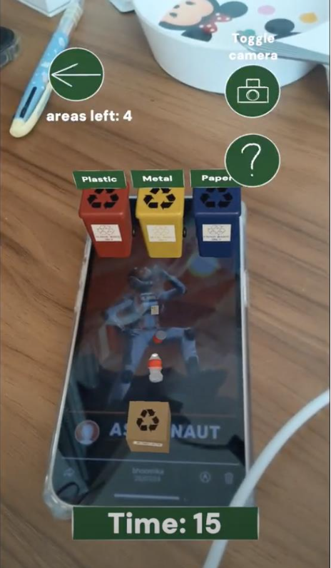
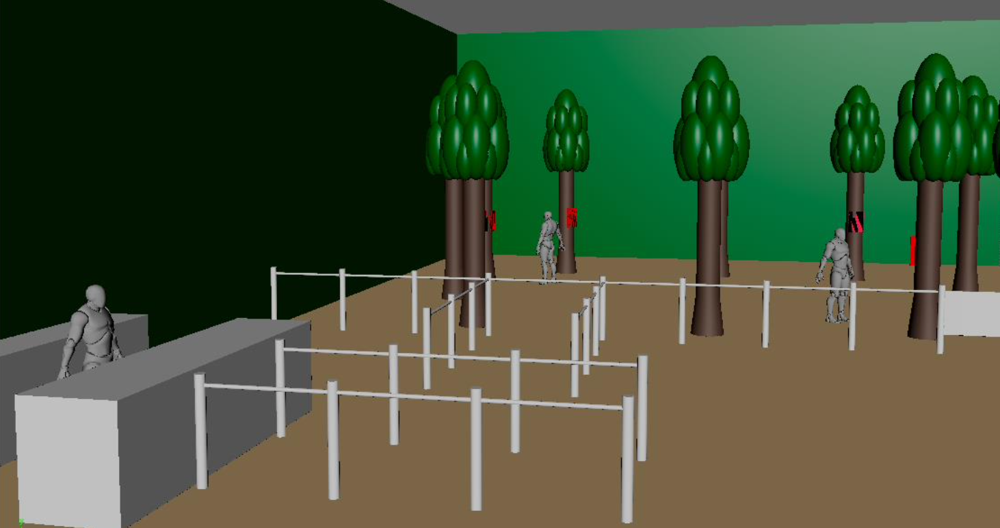

Botanics Garden AR

Overview
Botanic Gardens AR is a mobile AR game centered around the Botanic Gardens in Singapore. Our goal is to
provide an educational and distinctive experience by teaching users about the gardens' flora, fauna, and
history. The game incorporates various interactions, including tapping on plants within a virtual 3D map
to reveal clues, navigating through hedge mazes, and learning about environmental conservation practices
to ensure a clean and safe environment for all. Completing these interactions unlocks secret areas
within the game, adding to the immersive and educational aspects of the experience.
I led the development of the Recycling game, which utilized finger distance measurements on the screen
to accurately simulate the physics of throwing objects.
Branding
Botanic Gardens was selected as a UNESCO World Heritage Site for its role in conserving thousands of endangered plants. Our goal is to showcase Singapore's identity as a garden city to visitors and locals alike. The chosen color scheme and fonts are dyslexia- and colorblind-friendly, ensuring accessibility for all players.
Applications Used
Recycle Minigame
Game
Players start by registering or logging in, leading them to the main menu where they can begin playing the game, adjust audio settings, participate in a picture competition, visit the website, or log out. The game is set in Botanic Gardens, where players explore different areas by scanning image targets. They unlock the greenhouse after completing all four areas. Each area offers interactive experiences: Fusion involves assembling parts for a gazebo, Maze requires navigating mazes within a time limit, Collect educates players on cleanliness through trash collection, and Recycle teaches recycling by sorting items into the correct bins. The quiz tests knowledge by dragging sticks to correct models, and other activities include scaling an island and toggling music. Completing all activities unlocks additional game features and rewards.
Booth
The booth aims to create a park-like atmosphere by incorporating forest backdrops and miniature sculptures of trees to enhance immersion and emphasize nature. It prioritizes providing guests with an unobstructed space to freely interact with AR image targets. The keywords guiding the design are immersive, green, nature, safe, and unobstructed. Additionally, the team plans to distribute promotional pamphlets that double as compilations of image targets for the game. Guests can use these pamphlets to play the game and then take them home for continued play. The pamphlet holders will be on-theme to enhance memorability and showcase the creative approach of the project.
